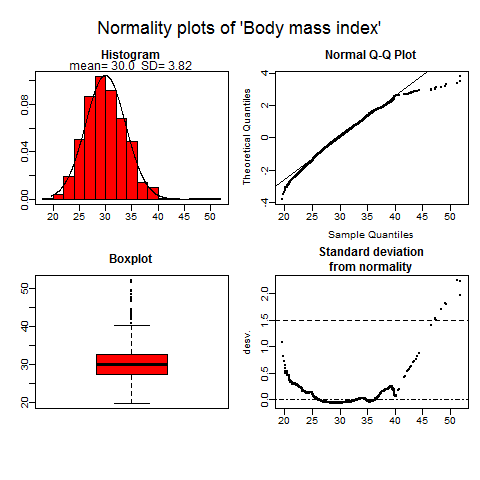
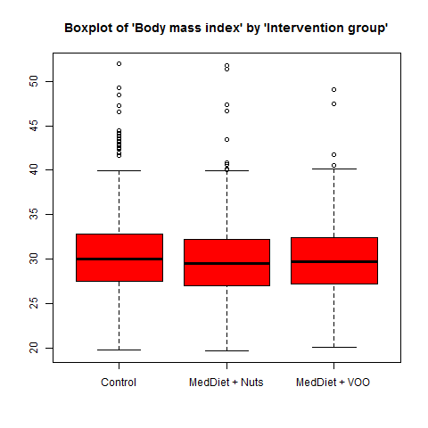

Example 2: Exploring your data graphically.
example2.RmdBarplots, boxplots or normality plots are displayed according to the nature of described variable. These plots are useful to explore visually whether a continuous variable follows a normal distribution or to identify possible outliers or rare categories, etc.
Setp 3. Computations
First use compareGroups function to store all values used to perform plots afterwards.
You can use varinfo function to recover the original name of variables (not labels which are displayed in the results).
--- Analyzed variable names ----
Orig varname Shown varname
1 group Intervention group
2 sex Sex
3 age Age
4 smoke Smoking
5 bmi Body mass index
6 waist Waist circumference
7 wth Waist-to-height ratio
8 htn Hypertension
9 diab Type-2 diabetes
10 hyperchol Dyslipidemia
11 famhist Family history of premature CHD
12 hormo Hormone-replacement therapy
13 p14 MeDiet Adherence score
14 event AMI, stroke, or CV Death Step 4. Perform plots
by using the plot method which takes the results created by compareGroups function. Inside “[” brackets you can select which variable to plot. And, indicating bivar=TRUE a bivariate plot is performed, i.e. stratifying by groups.
- For categorical variables a barplot is performed, stratifying by groups (right plot) or not (left plot):


- For continuous variables boxplots or normality plots are performed depending whether groups are considered or not, respectively.
